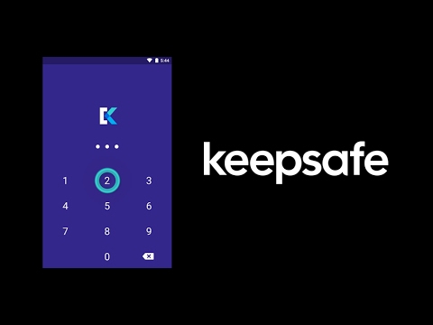

Keepsafe Premium 到底值不值得掏钱——一份认真算过的账本
定价拆解、三类用户算账、替代方案对比，把 Keepsafe 免费版和 Premium 版的真实边界掰扯清楚，帮你三秒对号入座。
它到底值不值得掏钱？这是我盯着 Keepsafe官网 商店页犹豫了三分钟之后冒出来的第一个念头。免费版用了半年，保险柜里攒了八百多张照片，云同步跑得还算稳，但那个"Upgrade to Premium"的红色按钮每次打开都在那儿晃着。最终我还是升级了——花掉 ¥198/年，不算便宜。这笔钱花得值不值？得好好算一算。
定价拆解：免费版给什么，Premium 版多什么
先把家底列清楚。
免费版是 Keepsafe 的基础形态——从官方下载就能装上用，不需要账号也能开保险柜（但不开账号就用不了云同步）。它的核心能力其实已经很完整了：PIN 码解锁、应用伪装（Secret Door）、照片视频导入导出、相册组织、基础的私人云同步。但有两个硬伤：云端存储容量有限（样本没说精确数字，只提"数百张量级"），而且没有那个让我最动心的节省空间功能。
Premium 版按年订阅，价格区间 ¥158 到 ¥238/年，因渠道和促销浮动。它解锁的东西可以分成三类：
云端能力升级是最实在的一块。免费版云同步是"尝个鲜"，Premium 版给你 10,000 个文件的上限——注意是按文件数量算，不是按 GB。一张几百 KB 的小图和一部几百 MB 的高清视频，在 Keepsafe 眼里都是 1。这个设定挺鸡贼的：如果你主要存照片，10,000 张足够堆好几年；但如果你习惯存视频，这个上限会被很快榨干。节省空间功能（Space Saver）也只在 Premium 有——本地只留压缩预览图，原图加密放云端，10,000 张原始约 50GB 的照片压缩后本地只剩 5GB，手机省空间的效果立竿见影。
虚拟 PIN（诱饵保险柜）是 Premium 独有的安全功能。主 PIN 打开真实保险柜，虚拟 PIN 打开一个只有几张无关照片的"干净"保险柜。这个功能的定位很明确——你担心的不是手机被黑客远程攻破，而是被身边的人（家长、伴侣、室友）随手翻手机、或者被迫输 PIN 的场景。三层迷惑链（桌面伪装成计算器 + 虚拟 PIN + 主 PIN）在日常隐私保护层面确实比免费版多了一层屏障。
其他锦上添花：高级导出选项、优先客服响应、无广告——这些不是决策的核心驱动力，但加起来也是一份附加价值。
算账：分三类人算
同样的 ¥198/年，对不同的人意味着完全不同的每单位时间成本。我把 Keepsafe 用户分成三档，逐一核算。
轻度用户（< 300 张，偶尔用云同步）
你的保险柜里常年不超过 300 张照片，云同步几乎不开——照片导入就导进来，导出就手动从 Keepsafe 里选，换手机了也就几百张，半小时就能手动搬运完。云同步对你来说是个"听说有的功能"。
结论：免费版完全够，别掏钱。
免费版的数百张云端上限对你来说根本不是上限。节省空间功能？你总共才 300 张，每张算 5MB 也就 1.5GB，手机还没挤到那份上。虚拟 PIN？你不觉得有人会来翻你手机。这 ¥198 花出去就是纯浪费。
主力用户（300 ~ 5,000 张，云同步常开，省空间有需求）
你的保险柜里有好几年来积累的隐私照片——可能是旅行的私密瞬间、工作的敏感截图、不想被云盘算法分析的私人影像。云同步常年开着，两台以上设备（手机 + 平板）同步同一台保险柜。最近发现手机存储开始报警（256GB 用了 200GB 以上），翻到 Keepsafe 设置里的空间占用时吓了一跳。
结论：闭眼付。
这笔钱算下来非常划算。¥198/年 ÷ 365 天 ≈ ¥0.54/天。你省下来的手机存储空间可能是几十 GB（5,000 张原图约 25GB → 压缩后 2.5GB，净省 22.5GB）。手机省出 20 多 GB 存储空间，这在 Android 上意味着不用频繁清理缓存、不用删除 App、不用担心"存储空间不足"弹窗打断拍照。虚拟 PIN 在伴侣室友偶尔翻手机的时候也能多一层保护。
节省空间的启动过程会花一些时间——Keepsafe 要扫描本地所有照片、逐张上传云端再压缩，建议在 WiFi + 充电状态下一夜跑完。关掉开关后还能把原图全部拉回本地（又是一次全量同步），这个设计挺厚道的——你不想要的时候能彻底退回。

重度用户（> 5,000 张，多设备，存视频）
你的保险柜已经积累了上万张照片和不少视频，可能还在频繁导入新内容、删除旧内容，云同步队列经常几百条待发。多设备（主力手机 + 备用机 + 平板）同步频率很高。
结论：值得付，但要心里有数两个限制。
第一个限制是 10,000 文件上限。免费版就几百张，Premium 翻到 10,000 看着很爽，但按文件数算这个设定意味着：如果你存视频，一部 300MB 的视频和一张 3MB 的照片消耗相同的 1 个配额。5,000 张照片 + 100 个视频 = 5,100 个文件，还剩 4,900 的余量；但如果你视频存得多（比如 500 个），很快就会被卡住。
第二个限制是云同步的稳定性。样本和 Keepsafe文档 都提到云同步断了是 Keepsafe 的已知高频问题——2026-10 的 14.23.0 版本更新日志里明确修了"Private Cloud Sync 暂停后无法恢复"的 Bug。如果你是重度用户，这个问题对你的影响远大于轻度用户——同步队列动不了意味着新照片上不去、多设备对不齐。这不是 Premium 不 Premium 的问题，是 Keepsafe 云服务本身的质量问题。
重度用户如果决定付，建议搭配 WiFi 手动同步（关掉"自动同步"，每天睡前手动点一下）、定期检查同步队列状态，不要完全依赖自动。
替代方案：不付这笔钱有什么别的路
不想给 Keepsafe 掏钱完全合理——它不是不可替代的。有三条路可以选。
第一条路：免费版 + 定期手动导出备份。 这是最现实的替代方案。免费版云同步不够用？那就定期（比如每月）把 Keepsafe 里的照片导出到电脑或其他云盘（百度网盘、OneDrive、iCloud）做备份，然后从 Keepsafe 里删掉旧的。这样 Keepsafe 里常年保持几百张的最新照片，免费版够用，而且"本地保险柜 + 外部备份"其实比单靠 Keepsafe 私人云更分散风险（不会因为 Keepsafe 服务器出问题丢全部）。缺点是需要每月花 10~20 分钟做这件事。
第二条路：换一个免费的隐私相册 App。 Android 端可以试试 Photo Vault、Hide Photos & Videos、Calculator Vault 之类的替代品——功能大同小异（PIN 解锁、伪装、加密存储），免费版的本地存储通常没有硬性上限。缺点是云同步功能要么没有、要么需要单独付费，而且加密强度和 Keepsafe 这种做了十几年的老牌产品未必在一个档次上。
第三条路：降低使用频率。 认真想想——你真的需要一个专门的 App 来藏照片吗？如果你的隐私照片数量其实没那么多（比如不到 100 张），系统相册 + 文件夹隐藏 + 文件加密可能就够了，完全不需要专门装一个 Keepsafe。

结论
最后给一个可以直接执行的判断标准：
闭眼付：保险柜常驻 300~5,000 张照片、云同步常开、手机存储空间已经在告警、不想每月花时间导出备份——你大概率已经在用免费版但总觉得"差点意思"，升级后的体验提升是实实在在的。
再等等：免费版还没满（云端几百张还有余量）、手机存储还剩至少 30GB、云同步用得不多——先用免费版撑着，等真的感受到"免费版不够用"的痛点再掏钱。冲动升级的钱都是冤枉钱。
永远不用付：保险柜常年不超过 100 张照片、或者觉得"我的照片没那么需要藏"——免费版的基础加密 + PIN 解锁已经能满足需求，Premium 的那些功能对你来说是纯噱头。
最后说一句我自己的选择——我付了，但不是因为 Premium 功能强大到离不开，而是因为我懒得每月手动导出、手机存储确实在告警、虚拟 PIN 给了我一点心理上的安全感。对我来说，¥198/年买这三个东西，值。但每个人的账本不一样，算清楚自己的再决定。
关于这套资料，我整理时参考了多处来源，GitHub、Gitee、GitCode 三个仓库都能找到完整的镜像备份，不管你习惯用哪个平台都能拿到，国内网络环境下访问也比较友好。